| 23 | 42 | 105 | 108 |
| 14 | 23 | 29 | 61 |
| 18 | 32 | 48 | 79 |
| 21 | 26 | 31 | 66 |
| 32 | 43 | 45 | 77 |
One World Extremes
Thursday, Mar 26, 2026
Idea promoted for engineering applications by Emil Gumbel (cf. Gumbel 1958).
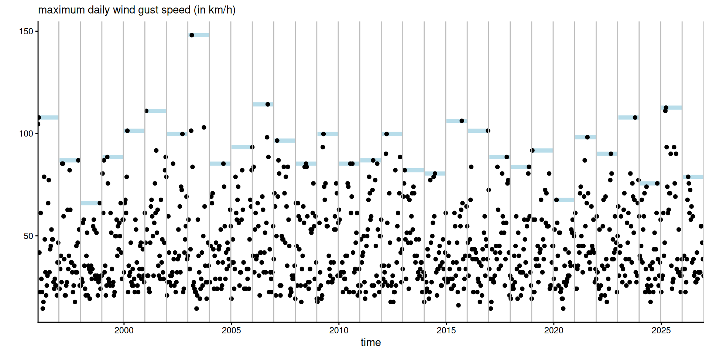
Figure 1: Daily maximum wind gust speed in Cheeseboro, California, for the months of January (plus Feb. 1st) 1996–2026, for a total of \(32 \times 31\) measurements.
The justification for using the GEV comes from Fisher and Tippett (1928), Gnedenko (1943), von Mises (1954).
If \(G\) is a distribution function and there exist location and scaling sequences \(d_m\) and \(c_m>0\) such that the maximum of \(m\) observations has a non-degenerate limiting distribution \[ \lim_{m \to \infty}G^m(c_mx+d_m) = F(x) \] then \(F(x)\) must be a GEV distribution function.
The GEV distribution function is \[\begin{align*} F(x; \mu, \sigma, \xi)=\begin{cases} \exp\left[-\left\{1+\xi \frac{x-\mu}{\sigma}\right\}_{+}^{-1/\xi}\right], & \xi \neq 0, \\ \exp\left[-\exp\left\{-\frac{x-\mu}{\sigma}\right\}\right], & \xi =0. \end{cases} \end{align*}\] with location \(\mu\in \mathbb{R},\) scale \(\sigma>0\) and shape \(\xi\in \mathbb{R}.\)
The support of \(\mathsf{GEV}(\mu, \sigma, \xi)\) is \(\{x: \sigma + \xi(x-\mu) > 0\}.\)
The GEV is characterized by max-stability:
if \(X_{j} \stackrel{\mathrm{iid}}{\sim} \mathsf{GEV}(\mu, \sigma, \xi)\), then for any \(m,\) \[\begin{align*} Y = \max\{X_{1}, \ldots, X_{m}\} \sim \mathsf{GEV}(\mu_m, \sigma_m, \xi), \end{align*}\] with \[\begin{align*} \mu_m &=\mu + \sigma (m^\xi-1)/\xi, &\sigma_m &= \sigma m^\xi, &\text{if }\xi &\neq 0,\\ \mu_m &= \mu+\sigma\log m, & \sigma_m &=\sigma,&\text{if }\xi &= 0. \end{align*}\]
The extremal types theorem extends to stationary time series (Leadbetter 1974, 1983; Leadbetter et al. 1983).
Under a condition \(D(u_n)\) and for extremal index \(\theta \in (0,1],\) we get instead \[\begin{align*} \lim_{m \to \infty} G^{\theta m}(c_{m}x+d_{m})&= F(x) \end{align*}\] or equivalently \[\begin{align*} \lim_{m \to \infty} G^{m}(c_{\theta m}x+d_{\theta m}) &= F(x). \end{align*}\]
Traditional extreme value bias-variance trade-off:
Surprisingly, very little work in the area.
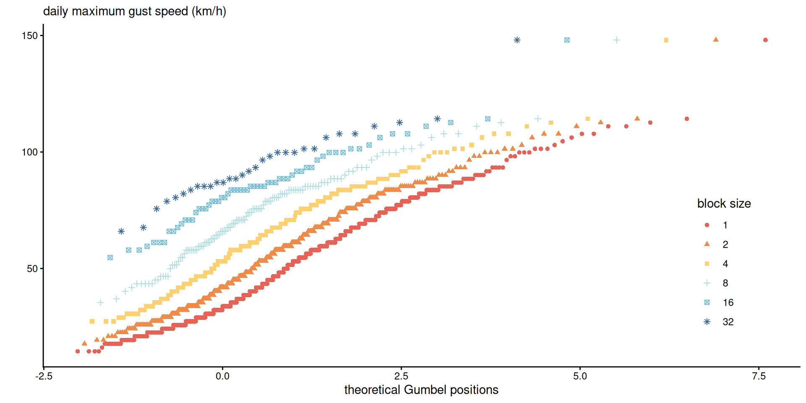
Figure 2: Gumbel plot of \(m\)-day maxima against standard Gumbel plotting positions \(-\log[-\log\{i/(n+1)\}]\) for the Cheeseboro wind gust data.
Plot à la Cox et al. (2002). With Gumbel fit, lines should be parallel, but we see some evidence of distortion for \(b=1\) or \(b=2\) days.
Consider blocks of size \(b\) versus \(bm\) for \(b, m \in \mathbb{N}.\) We gather observations into an \(n_b/m \times m\) matrix of ordered inputs.
| 23 | 42 | 105 | 108 |
| 14 | 23 | 29 | 61 |
| 18 | 32 | 48 | 79 |
| 21 | 26 | 31 | 66 |
| 32 | 43 | 45 | 77 |
Row \(i\) contains the order statistics \(X_{i, (1)} \leq \cdots \leq X_{i, (m)}.\)
Let \(X_{(1)} \leq \cdots \le X_{(m)}\) denote the order statistics.
Let \(F\) and \(f\) be the CDF and density of \(X_j \stackrel{\mathrm{iid}}{\sim}\mathsf{GEV}(\mu, \sigma, \xi).\)
The joint density of order statistics is the product of
The conditional density of \(X_{(1)}, \ldots, X_{(m-1)} \mid X_{(m)}\) is \[\begin{align*} f_{{(1, \ldots, m-1)} \mid {(m)}}(\boldsymbol{x}_{-(m)}) &= (m-1)!\prod_{j=1}^{m-1}\frac{f(x_{(j)}; \mu, \sigma, \xi)}{F(x_{(m)}; \mu, \sigma, \xi)} \end{align*}\] so the \((m-1)\) smallest observations are, up to permutation, \(\mathsf{GEV}(\mu, \sigma, \xi)\) truncated above at \(x_{(m)}\).
The block maximum \(Y=\max(X_1,\ldots, X_m)\) has CDF \(F_{(m)}(x)=F^m(x)\) and density \[\begin{align*} f_{(m)}(x) &= m F(x; \mu, \sigma, \xi)^{m-1}f(x; \mu, \sigma, \xi) \\ &= f(x; \mu_m, \sigma_m, \xi), \end{align*}\] by max-stability.
We write \[\begin{align*} \mathcal{L}({\boldsymbol{\vartheta}}_0, {\boldsymbol{\vartheta}}_m)=\prod_{i=1}^n f_{{(1, \ldots, m-1)} \mid {(m)}}(\boldsymbol{x}_{i, -(m)};{\boldsymbol{\vartheta}}_0)f_{(m)}(x_{i,(m)}; {\boldsymbol{\vartheta}}_m), \end{align*}\] where
Under the null hypothesis of max-stability, \({\boldsymbol{\vartheta}}_m=(\mu_m, \sigma_m, \xi) = g(\boldsymbol{\vartheta}_0),\) say.
The idea underlying our testing procedure is to let the parameters of the block maximum differ, by
We use likelihood ratio statistics to compare the models \(\mathcal{H}_0\) and \(\mathcal{H}_a.\) The asymptotic distribution of the test is \(\chi^2_k\) with \(k\in\{1, 2, 3\}.\)
We consider different scenarios to assess the power of tests:
All power curves are based on 2000 replications, with tests conducted at level 5%.
We consider maxima of
with distribution \(G\) and block of size \(30,\) simulate
We use the penultimate approximation to get GEV parameters and simulate from these. Both have limiting shape \(\xi=0,\) but convergence is slow.
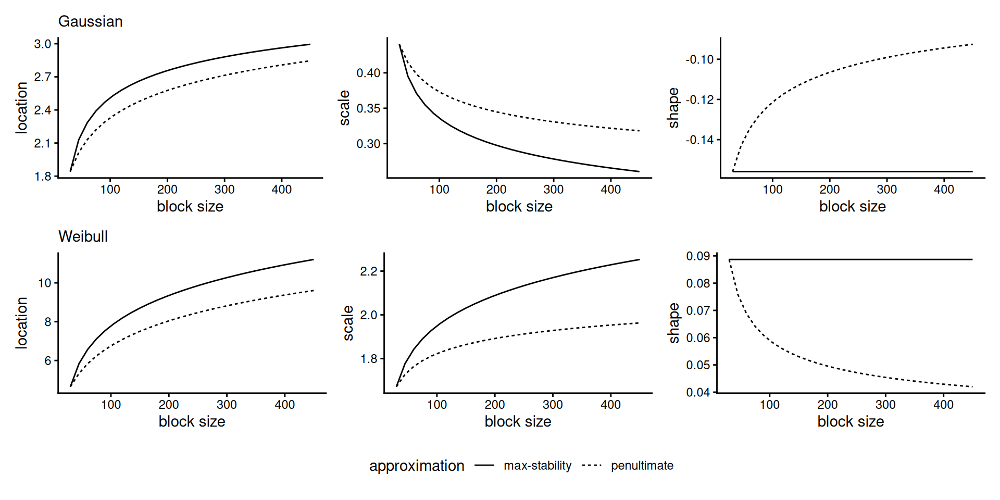
Figure 3: GEV parameters based on max-stable (dashed), and the penultimate approximation (full) for Gaussian (top) and Weibull (bottom).
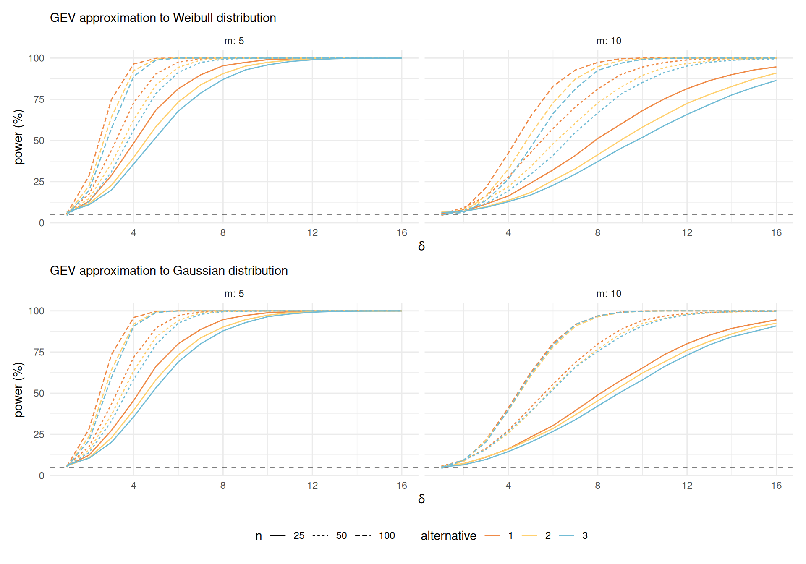
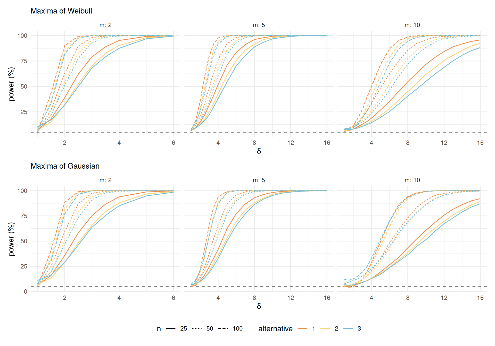
We simulate directly block maxima from \(G^{30},\) where \(G\) is the Gaussian or Weibull CDF, but where the largest observation is drawn from \(G^{30\delta}.\)
To investigate serial dependence, we also consider data from first-order max-autoregressive (MAR) processes parametrized in terms of the extremal index \(\theta.\)
Consider the stochastic process obtained through the recursion (Tavares 1977) \[\begin{align*} X_i &= \max\{X_{i-1}, Z_i\} +\log(1 - \theta), \quad i \geq 1 \\ Z_i &\sim \mathsf{GEV}\{\log(\theta) - \log(1-\theta),1,0\} \end{align*}\] The margins are standard Gumbel, \(X_i \sim \mathsf{GEV}(0,1,0),\) while the distribution of \(Y = \max\{X_1, \ldots, X_{m}\}\) is Gumbel with location \(\log[(m-1)\theta+1].\)
Max-stability holds asymptotically, but with \(m\theta\) rather than \(m\).
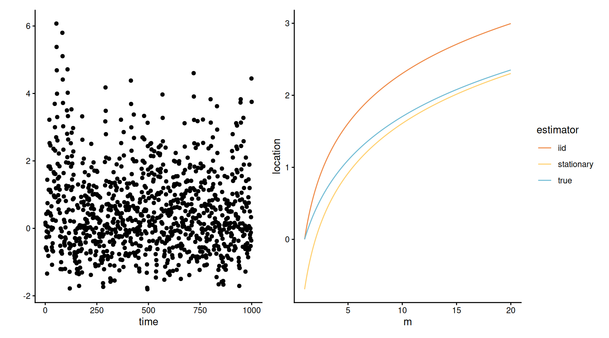
Figure 4: MAR with \(\xi=0\) and \(\theta=0.5\): time series of simulated values (left) and location parameters of the Gumbel maxima based on extrapolating to blocks of size \(m\), taking \(\log(m)\) (iid) and \(\log(m\theta)\) (stationary) as location parameters.
For \(\xi>0\), the first-order max-autoregressive model is \[\begin{align*} X_i &= \max\{(1-\theta)^\xi X_{i-1}, Z_i\}, \qquad i \geq 1 \\ Z_i &\sim \mathsf{GEV}(\theta^{\xi}, \xi\theta^{\xi}, \xi) \end{align*}\] The marginal stationary distribution is Fréchet with shape \(\xi^{-1}\), i.e., a \(\mathsf{GEV}(1, \xi, \xi).\)
The distribution of \(Y= \max\{X_1, \ldots, X_{m}\}\) has CDF \(\exp[-\{\theta(m-1)+1\}x^{-1/\xi}];\) see Example 10.3 of Beirlant et al. (2004).
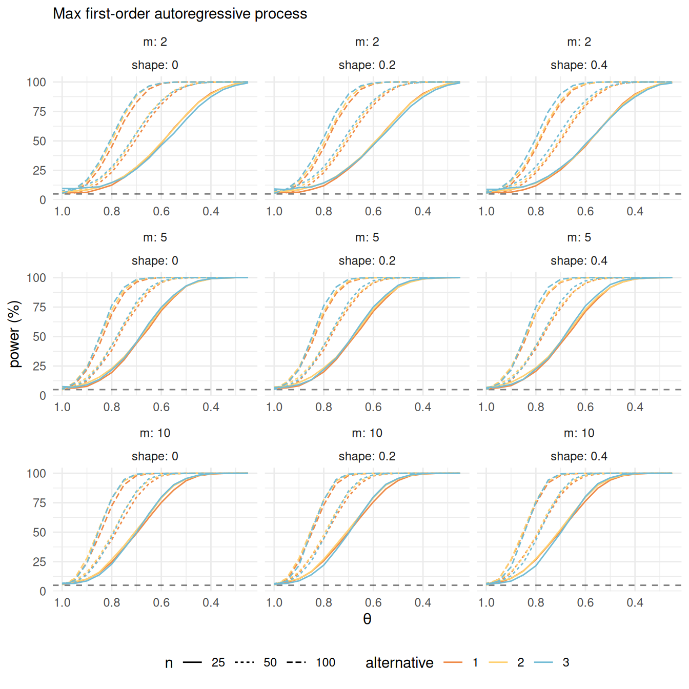
As the empirical block size gets larger, the GEV approximation should become effective and directly incorporate the impact of \(\theta\).
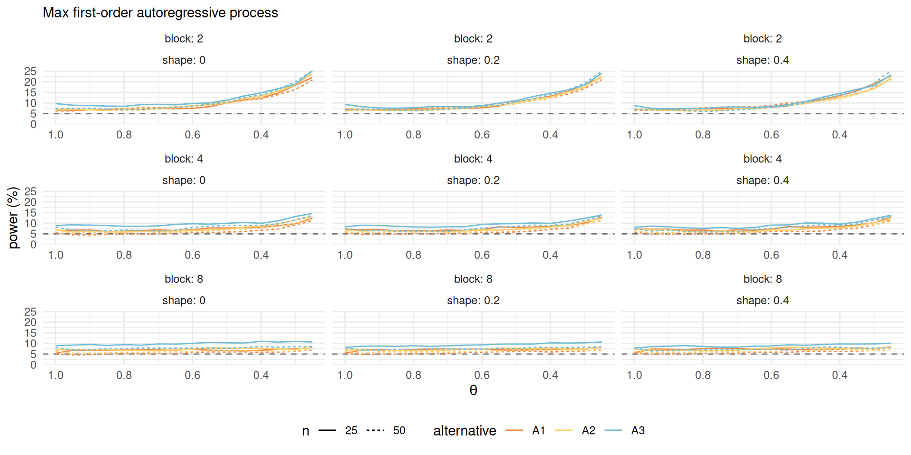
We propose quantile-quantile plots to assess the goodness-of-fit of the model.
Among quantities of interest
We use a parametric bootstrap scheme for uncertainty quantification.
Under the null hypothesis, the \(F(X_{j}; \boldsymbol{\vartheta})\) are uniform and standard results on order statistics of uniform samples gives for the spacing \[\begin{align*} S(\boldsymbol{\vartheta}) = F(X_{(m)}; \boldsymbol{\vartheta})- F(X_{(m-1)}; \boldsymbol{\vartheta}) &\sim \mathsf{beta}(1, m) \end{align*}\] and for the largest observation \[\begin{align*} F(X_{(m)}; \boldsymbol{\vartheta}) &\sim \mathsf{beta}(m, 1). \end{align*}\]
Alternative pivots can be obtained, e.g., via Rényi’s representation.
A conventional parametric bootstrap to test properties of the statistic \(S(\boldsymbol{\vartheta})\) would
The null distribution of \(S(\widehat{\boldsymbol{\vartheta}})\) depends on the unknown true parameter value \(\boldsymbol{\vartheta}\), and although this is replaced by an estimator that is consistent under the null hypothesis, some distortion remains.
The resulting error can be reduced by nested bootstrapping (Davison and Hinkley 1997, sec. 3.9), but this may be too computationally complex for routine use.
Since interest lies in extrapolation, we can also consider estimation of GEV parameters based on the marginal distribution of \(X_{(1)}, \ldots, X_{(m-1)}\), where \[\begin{align*} \mathcal{L}_{\text{marg}}(\boldsymbol{\theta}) &= \prod_{i=1}^n f_{(1),\ldots, (m-1)}(\boldsymbol{x}_i; \boldsymbol{\theta})\\&\propto \prod_{i=1}^n\{1-F(x_{i,(m-1)})\}\prod_{j=1}^{m-1} f(x_{i,(j)};\boldsymbol{\theta}) \end{align*}\] which amounts to right-censoring the largest observation.
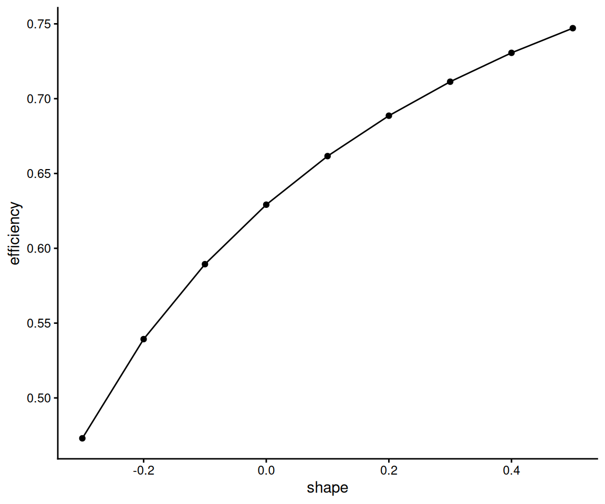
| \(m=2\) | \(m=4\) | |||||
|---|---|---|---|---|---|---|
| block | \(A_1\) | \(A_2\) | \(A_3\) | \(A_1\) | \(A_2\) | \(A_3\) |
| \(b=1\) | 0 | 0 | 0 | 0 | 0 | 0 |
| \(b=2\) | 0.005 | 0.02 | 0 | 0.081 | 0.21 | 0 |
| \(b=4\) | 0.279 | 0.47 | 0.16 | 0.252 | 0.47 | 0.17 |
| \(b=8\) | 0.176 | 0.38 | 0.47 | 0.743 | 0.76 | 0.82 |
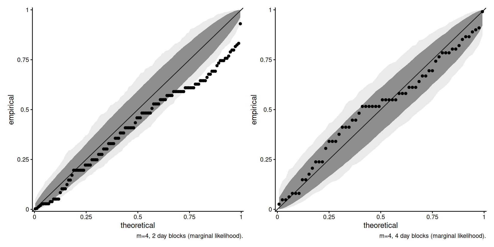
We obtain pointwise and simultaneous confidence intervals using the envelope method (section 4.2.4 of Davison and Hinkley 1997).
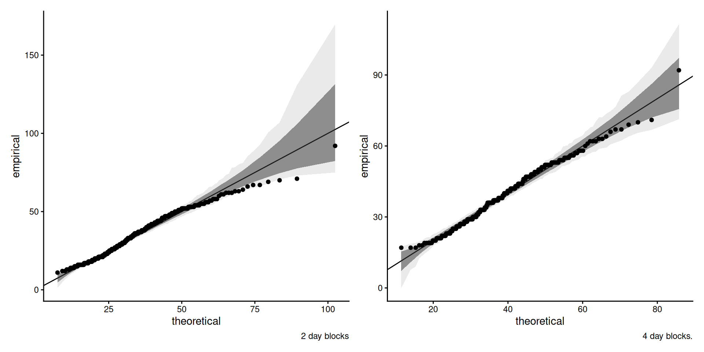
Work in progress to account for rounding.
The block size can have a sizeable impact on risk estimation (sample maximum is 148km/h). Shape of \(\widehat{\xi}=0.18\) for \(b=1,\) versus \(\xi=-0.09\) for \(b=4.\)
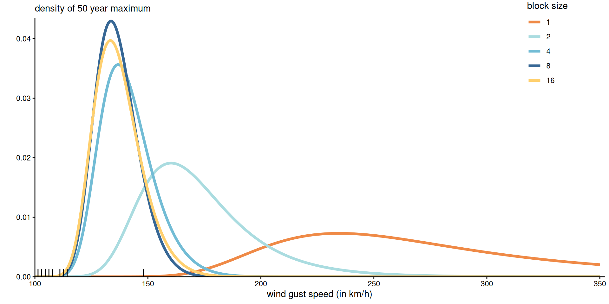
Density of the 50-year maximum for the Cheeseboro wind gust data, based on different block size and maximum likelihood estimates.
Use GEV model fitted to blocks of size \(4\) days to calculate risk measures for the maximum 50 years wind gust, by using the max-stability relationship with \(m=8 \times 50.\)
We propose likelihood ratio tests for testing max-stability for \(n_b\) blocks of size \(b\)
Diagnostic plots based on bootstrap to account for goodness-of-fit.
Theory for these is more complicated, owing to lack of genuine likelihood.
Comments on power curves